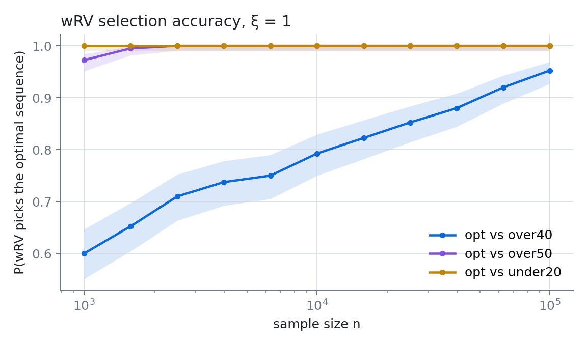
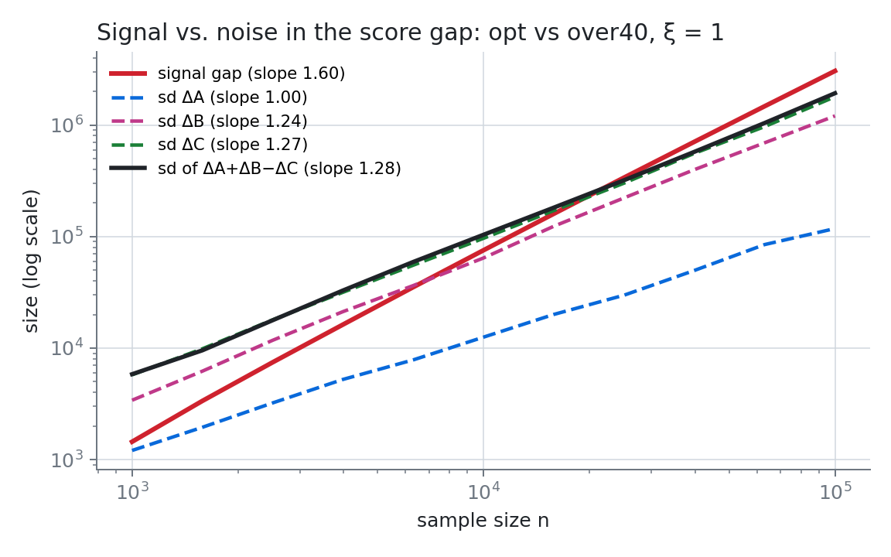

Draft. Yellow boxes are notes for Ben and should be removed before submission.
Abstract
Zhang and Lei (2025)[1] prove that weighted rolling validation (wRV), an online model-selection method, reliably rejects models that underfit. Their argument stops exactly at the boundary for models that overfit mildly, where they conjecture that "intricate cancellations" between error terms let the method succeed anyway. We study this boundary for trigonometric projection estimators, using simulation and exact finite-sample calculation. In every tested setting (sample sizes up to 100,000, four truth and cutoff configurations), the probability that wRV picks the rate-optimal sequence rises toward one. The fluctuation of the score gap splits into three terms. Their cancellation is real but modest: it lowers the variance by about 19 to 47 percent, roughly constant in \(n\). It comes almost entirely from a covariance between two of the terms, which we derive exactly: noise that the overfitting model happens to fit when it scores a point later corrupts the same coefficients once that point is used for training. Each fluctuation term also grows more slowly than the signal. A direct calculation turns this into a proof (Theorem 1): for these estimators, wRV is consistent at the boundary without any cancellation. With a smoother truth, apparent failures of wRV turn out to agree with its own expected score. The proof is a draft that has not yet been checked independently, and it covers projection estimators only.
Severe overfitting is usually easy for validation to catch. The harder case is mild overfitting: a model that uses a few too many terms, whose error still goes to zero, just a little more slowly than the best model. This project asks whether one specific online validation method, weighted rolling validation, can reliably tell the two apart, in a setting where the existing theory stops just short of an answer.
1The problem
1.1Online model selection
Suppose data arrive one point at a time, and we keep refitting a regression as they come in. We have several candidate modeling strategies and want to pick the best one without setting aside a permanent holdout set. Zhang and Lei (2025)[1] propose weighted rolling validation (wRV): at each step, fit every candidate on the data so far, predict the next point before seeing it, and record the squared error. Later errors get more weight, because early fits are trained on very little data. Classical results for cross-validation compare models on held-out splits[3][4]; wRV instead scores each fit on the very next observation, so no data are permanently set aside.
For a candidate whose estimate after \(i-1\) points is \(\hat f_{i-1}\), the score after \(n\) points is
\[ \mathrm{RV}_n \;=\; \sum_{i=1}^{n} i^{\xi}\,\bigl(\hat f_{i-1}(X_i) - Y_i\bigr)^2 , \]and wRV picks the candidate with the smallest score. The weight exponent \(\xi \ge 0\) controls how much later errors count; the paper recommends \(\xi = 1\).
1.2The setting
We observe \(X \sim \mathrm{Uniform}[0,1]\) and \(Y = f_0(X) + \varepsilon\) with bounded noise. We expand \(f_0\) in the trigonometric basis \(\phi_0 = 1\), \(\phi_{2k-1}(x) = \sqrt2\cos(2\pi k x)\), \(\phi_{2k}(x) = \sqrt2\sin(2\pi k x)\), which is orthonormal under the uniform distribution. A projection estimator[5] with \(J\) terms trained on \(m\) points is
\[ \hat f(x) = \sum_{j \lt J} \hat\theta_j \phi_j(x), \qquad \hat\theta_j = \frac1m \sum_{t=1}^{m} Y_t\,\phi_j(X_t). \]Because the basis is orthonormal, these coefficients are just sample averages, so every fit along the way comes almost for free from running sums.
The candidates are not single models but sequences of model sizes, \(J(m) = m^{a}\). For a truth of smoothness \(s\), the rate-optimal choice is \(a = 1/(2s+1)\), which balances squared bias \(\approx J^{-2s}\) against variance \(\approx J/m\). Any \(a > 1/(2s+1)\) overfits: its error is dominated by variance, \(\approx m^{a-1}\), which still goes to zero, just more slowly.
1.3Where the theory stops
Zhang and Lei's selection theorem[1] (their Theorem 4.1, applied in Section 6.1) needs a strict stability inequality for the inferior candidate: \(b_h > \tfrac12 + \tfrac{a_h}{2}\), where \(b_h\) is its stability rate and \(a_h\) its risk rate. For the projection estimator with \(J = m^{\alpha}\), they compute \(b_h = 1 - \alpha/2\) and \(a_h = (1-\alpha) \wedge 2s\alpha\). When \(\alpha < 1/(2s+1)\) (underfitting), the inequality holds and wRV provably picks the optimal sequence. When \(\alpha > 1/(2s+1)\) (overfitting), \(a_h = 1 - \alpha\), and the two sides become exactly equal: \[ b_h = 1 - \tfrac{\alpha}{2} = \tfrac12 + \tfrac{1-\alpha}{2}. \]
So the proof lands on the boundary for every overfitting exponent, even though the authors' simulations show wRV still picks the right model. They suggest the reason may be "intricate cancellations" between the terms of their decomposition, equation (15).
2Approach
2.1Splitting the score into signal and noise
Write \(D_i = \hat f_{i-1} - f_0\) for the estimation error, \(w_i = i^{\xi}\) for the weight, \(r_i = \mathbb E[D_i(X)^2 \mid \text{first } i-1 \text{ points}]\) for the conditional risk, and \(m_i = \mathbb E[r_i]\) for the expected risk. Following the paper's equation (15), the score splits exactly into five parts:
\[ \mathrm{RV}_n = \underbrace{\sum w_i \varepsilon_i^2}_{\text{pure noise}} + \underbrace{\sum w_i m_i}_{\text{signal}} + \underbrace{\sum w_i (D_i^2 - r_i)}_{A} + \underbrace{\sum w_i (r_i - m_i)}_{B} - \underbrace{2\sum w_i \varepsilon_i D_i}_{C}. \]The pure-noise part is identical for every candidate, so it cancels when we compare two of them. The signal is the expected score gap, which favors the better model. \(A\) and \(C\) are martingale sums, and \(B\) is the hard, non-martingale part that the paper controls through estimator stability. wRV picks correctly when the signal gap beats the combined fluctuation \(\Delta A + \Delta B - \Delta C\).
2.2Simulation design
- Smoothness \(s = 1\), so the optimal exponent is \(a = 1/3\).
- Truth: \(f_0 = \sum_{j \lt 400} \theta_j \phi_j\) with both coefficients at frequency \(k\) equal to \(0.65\,k^{-3/2}\). This is a finite calibration device for the simulation, not an exact worst case from the theory.
- Noise: \(\varepsilon = \pm 1\) with equal probability (bounded, as the theory assumes).
- Candidates:
opt(\(a = 1/3\)),over40(\(a = 0.40\)),over50(\(a = 0.50\)), andunder20(\(a = 0.20\)) as an underfitting control that the theory already covers. - Weights \(\xi \in \{0, 1, 2\}\), all computed on the same data. Scoring starts after 100 training points.
- 400 independent trajectories, each to \(n = 100{,}000\). Candidates are compared on the same trajectory (paired).
2.3Exact centering
Because \(f_0\) lies inside the span of the basis, the conditional and expected risks have closed forms by Parseval's identity:
\[ r_i = \sum_{j \lt J}(\hat\theta_j - \theta_j)^2 + \sum_{j\ge J}\theta_j^2, \qquad m_i = \frac{1}{i-1}\sum_{j \lt J}\mathrm{Var}\bigl(Y\phi_j(X)\bigr) + \sum_{j\ge J}\theta_j^2 . \]So every term of the decomposition is computed exactly, with no Monte Carlo calibration bank. That removes one source of error that could otherwise be mistaken for cancellation.
2.4Checks
| Check | What it rules out | Result |
|---|---|---|
| Basis orthonormality on a quadrature grid | A wrong basis or scaling | max error 7e-15 |
| Refit from scratch at random times | Leakage: using point \(i\) to predict point \(i\) | max difference 3e-15 |
| noise + signal + A + B − C vs. the directly computed score | Errors in the decomposition | max relative error 5e-15 |
| Monte Carlo mean of \(r_i\) vs. exact \(m_i\) | Wrong centering | ratio 0.97 to 1.02 |
3Results
3.1Finding 1: selection improves over the tested sample sizes

opt, with 95% Wilson intervals, \(\xi = 1\).Against the mild overfitter over40, wRV is close to a coin flip at \(n = 1{,}000\) (0.60, 95% CI 0.55 to 0.65)
and climbs to 0.95 (0.93 to 0.97) at \(n = 100{,}000\). Against over50 and the underfitting control, it is essentially always right.
This matches the intuition: the milder the overfitting, the smaller the true error gap, and the more data you need to see it.
| opt vs over40, \(n = 100{,}000\) | \(\xi = 0\) | \(\xi = 1\) | \(\xi = 2\) |
|---|---|---|---|
| P(correct) | 0.980 | 0.953 | 0.915 |
Heavier weighting on late errors makes selection slightly less accurate here. That fits the paper's own trade-off: a larger \(\xi\) reacts faster but makes the score concentrate less tightly.
3.2Finding 2: modest cancellation over the tested range

The variance of \(\Delta A + \Delta B - \Delta C\) is about 65 to 80 percent of what it would be if the terms were independent
(about 60 to 65 percent for over50). Almost all of this comes from one pair: \(\Delta B\) and \(-\Delta C\) have a correlation of
about \(-0.3\) at every sample size. \(\Delta A\) is essentially uncorrelated with both.
These results support cancellation in this experiment. Across the tested sample sizes, the variance ratio shows no clear trend toward zero. This is compatible with a constant-factor reduction over this range; it does not establish the asymptotic order of the cancellation.
3.3Finding 3: the signal already outgrows each term on its own

This was the surprise. On a log-log scale, the signal gap grows with slope about 1.60, while each fluctuation term grows more slowly (\(\Delta A\): 1.00, \(\Delta B\): 1.24, \(\Delta C\): 1.27; combined: 1.28). The signal-to-noise ratio rises from 0.25 at \(n = 1{,}000\) to 1.58 at \(n = 100{,}000\). If these rates hold, wRV would win even without any cancellation.
A martingale calculation gives an exact check for the plotted difference term. Let \(H_i=\hat f_{h,i-1}-\hat f_{g,i-1}\). With independent noise of variance \(\sigma^2\),
\[ \operatorname{Var}(\Delta C_n)=4\sigma^2\sum_{i=101}^{n}i^{2\xi}\,\mathbb E\|H_i\|_{L^2}^2. \]The candidates use the same coefficient averages and nested bases. Thus, when \(J_h\ge J_g\),
\[ \mathbb E\|H_i\|_{L^2}^2= \sum_{j=J_g}^{J_h-1}\left(\frac{V_j}{i-1}+\theta_j^2\right), \qquad V_j=\operatorname{Var}(Y\phi_j(X)). \]This accounts for the shared training data. The individual-candidate formula
\(\operatorname{Var}(C_n)=4\sigma^2\sum i^{2\xi}m_i\) also holds, but is not the variance plotted above.
Run check_paired_variance.py to compare the exact paired standard deviation with the simulation.
For an idealized uncapped series model with the stated power-law bias and variance behavior, the individual overfitting term has standard deviation of order \(n^{\xi+\alpha/2}\), while the expected score gap has order \(n^{\xi+\alpha}\). These are theoretical predictions under those assumptions, not limiting rates of this capped experiment. The exact finite-model calculation gives a local signal slope near 1.59 at \(n\approx6\times10^4\) and 1.52 at \(n\approx1.5\times10^6\); this drift alone does not establish convergence to 1.4.
3.4Robustness: could these results be artifacts of the setup?
The main run uses one truth, one smoothness level and a 400-term cap. Any of these could drive the results, so I reran the simulation in three changed settings, each with 200 trajectories to \(n = 100{,}000\). All four built-in checks passed in every run.
- Larger cutoff. The same truth law, extended to 1,200 terms, with every candidate capped at 1,200.
- Log-adjusted truth. Coefficients \(0.65\,k^{-3/2}/(1+\log k)\), which have a finite Sobolev-1 norm without any cap. Cap 1,200.
- Smoother truth, \(s = 2\). Coefficients \(0.65\,k^{-5/2}\). The optimal exponent becomes \(1/5\), and
over30(\(a = 0.30\)) is the mild overfitter.

opt over the mildest overfitter, with 95% intervals, \(\xi = 1\). Right: mean signal gap divided by the standard deviation of the combined fluctuation.| Setting (opt vs mildest overfitter, \(\xi = 1\)) | P(correct), \(n=10^3\) | P(correct), \(n=10^5\) | Var ratio | corr\((\Delta B, -\Delta C)\) | Slopes: signal / noise |
|---|---|---|---|---|---|
| Main: \(s=1\), cap 400, vs over40 | 0.60 | 0.95 | 0.65–0.79 | −0.29 | 1.60 / 1.28 |
| Cap 1,200, vs over40 | 0.65 | 0.96 | 0.65–0.79 | −0.29 | 1.60 / 1.31 |
| Log-adjusted truth, vs over40 | 0.95 | 1.00 | 0.57–0.69 | −0.38 | 1.48 / 1.30 |
| \(s = 2\), cap 400, vs over30 | 0.27 | 0.74 | 0.71–0.81 | −0.29 | see below / 1.11 |
Three patterns appeared in every setting over the tested range. First, the cancellation was modest and roughly constant:
the variance of the combined fluctuation was 53 to 81 percent of the sum of the separate variances across all overfitting comparisons
(73 to 90 percent in standard-deviation terms), with no clear trend in \(n\). A finite simulation cannot show that this ratio stays constant as \(n \to \infty\).
Second, the cancellation always came from a negative correlation between \(\Delta B\) and \(-\Delta C\) (about \(-0.3\) to \(-0.4\)).
Third, the combined noise grew more slowly than the signal gap. Tripling the cutoff gave similar selection results at these sample sizes, which is expected, since the
400-term cap does not bind for over40 below about 3 million points.
The \(s = 2\) run looks like a failure at first: at \(n = 1{,}000\), wRV picks the overfitter 73% of the time. Two exact quantities, computed from the risk formula, explain why. They answer different questions, so both are worth checking.
- Current risk. Which model predicts the next point better, given the data so far. For \(s = 2\) the optimal model size
\(J(m) = \lceil m^{1/5} \rceil\) grows very slowly and only in steps, at exact fifth powers (1,024, 3,125, 7,776, 32,768). Right after each step,
opthas the lower risk. Then it keeps the same number of terms for thousands of points: its variance keeps falling but its bias stays fixed, whileover30keeps adding terms and catches up. So the ranking switches 16 times between 100 and 32,800 points.over30is ahead for about 21% of that range, in windows such as 250 to 1,024 and 4,460 to 7,776. - Expected wRV score. wRV compares cumulative weighted scores, starting after the 100-point burn-in. The expected score gap
\(\sum_{i>100} i^{\xi}(m_{\text{over30},i} - m_{\text{opt},i})\) remembers those windows. With \(\xi = 1\), it favors
over30until \(n \approx 9{,}840\), mostly because of the long window from 4,460 to 7,776. With \(\xi = 0\) it does so until \(n \approx 33{,}470\). The value saved by the simulation matches an independent recomputation to a relative error of \(10^{-13}\).
At the recorded checkpoints from 1,000 through 6,310, the expected cumulative score favors over30, and wRV picks opt less than half the time.
In that range, picking over30 is what the score is designed to reward. From 10,000 onward the expected score favors opt, and the
probability of choosing it climbs to 0.74 at 100,000.
Rate optimality describes how the error shrinks as \(n \to \infty\). It does not guarantee the smallest current risk or the smallest expected score at a given sample size, especially when the model size grows slowly and in integer steps. This experiment compares particular sequences with fixed constants.
3.5Exact variance of the paired \(B\) term
For this projection estimator, the paired B term has a finite-sample variance formula. Write \(Z_{t,j}=Y_t\phi_j(X_t)-\theta_j\), \(\bar Z_{m,j}=m^{-1}\sum_{t=1}^mZ_{t,j}\), and let \(I_m=\{J_g(m),\ldots,J_h(m)-1\}\) be the band included only by the larger model. The deterministic bias difference disappears after centering, giving
\[ \Delta B_n=\sum_{m=100}^{n-1}(m+1)^\xi \left(\sum_{j\in I_m}\bar Z_{m,j}^2- \mathbb E\sum_{j\in I_m}\bar Z_{m,j}^2\right). \]Define \(\Gamma_{jk}=\mathbb E[Z_jZ_k]\), \(G_{IJ}=\sum_{j\in I,k\in J}\Gamma_{jk}^2\), and
\[ K_{IJ}=\sum_{j\in I,k\in J} \left(\mathbb E[Z_j^2Z_k^2]-\Gamma_{jj}\Gamma_{kk}-2\Gamma_{jk}^2\right). \]Expanding fourth moments of independent, centered observations gives, for \(m\le\ell\),
\[ \operatorname{Cov}\left(\sum_{j\in I}\bar Z_{m,j}^2, \sum_{k\in J}\bar Z_{\ell,k}^2\right) =\frac{K_{IJ}}{m\ell^2}+\frac{2G_{IJ}}{\ell^2}. \]To see the coefficients, the fourth cumulant has \(m\) contributions from a single shared observation, and the two cross-pairings each have \(m^2\) contributions. Dividing by \(m^2\ell^2\) yields the formula. This allows different, overlapping bands and correlated coefficients.
The exact variance is obtained by weighting and summing these covariances over all pairs of training times, including the diagonal.
exact_b_variance.py computes the required moments by deterministic quadrature and groups equal bands to avoid a quadratic loop over times.
| Weight | Exact sd at 100,000 | Simulated sd | Simulated / exact |
|---|---|---|---|
| \(\xi=0\) | 32.340 | 31.655 | 0.979 |
| \(\xi=1\) | 1,263,357 | 1,204,791 | 0.954 |
| \(\xi=2\) | 8.1651e10 | 7.7860e10 | 0.954 |
The saved 400-trajectory simulation agrees within about 5% at these endpoints. This is a check of the formula for the finite model, not a proof of the asymptotic B rate or selection consistency. The remaining theoretical task is to bound the band sums uniformly as dimension grows. This extension was AI-assisted and should be independently understood and checked before presentation.
Two separately written derivations of this formula (exact_b_variance.py and check_B_variance.py) give the same values
to every printed digit. A larger validation run, with 10,000 trajectories up to \(n = 3{,}000\), puts the simulated standard deviation within 2.2% of the exact one.
3.6Where the cancellation comes from
Finding 2 showed that the partial cancellation comes almost entirely from \(\Delta B\) and \(\Delta C\). The same algebra gives their covariance exactly, and it explains the mechanism. Write \(H = \hat f_h - \hat f_g = \sum_{l \in I} \hat\theta_l \phi_l\) for the extra part of the larger model, so that \(\Delta C_n = 2\sum_i w_i\,\varepsilon_i\,H_{i-1}(X_i)\).
Point \(i\) plays two roles. It is scored once, which enters \(\Delta C\), and then it becomes training data for every later fit, which enters \(\Delta B\). Split a later coefficient error into past, present and future parts, \(\bar Z_{k-1,j} = (P_j + Z_{i,j} + R_j)/(k-1)\). The future part \(R\) is independent with mean zero, and \(\mathbb E[\varepsilon_i] = 0\) removes the purely past part. What survives is, for \(k - 1 \ge i\),
and zero when \(k - 1 < i\). The first term comes from \(\mathbb E[\varepsilon_i Z_{i,j} \mid X_i] = \sigma^2\phi_j(X_i)\) together with orthonormality, \(\mathbb E_X[H(X)\phi_j(X)] = \hat\theta_j\). The second comes from the odd part of \(Z_{i,j}^2\) in \(\varepsilon_i\). Summing with the weights gives
In words: when the overfitting model's extra terms happen to line up with the noise at point \(i\), it predicts that point unusually well. That makes \(\Delta C\) large and lowers its score. The same noisy point then joins the training data and pushes those same extra coefficients further from the truth, which makes \(\Delta B\) large and raises its score later. The model pays back its lucky prediction. The first term, the direct pay-back, accounts for at least 97% of the covariance.
| Comparison, \(\xi\) | Exact corr\((\Delta B, -\Delta C)\) | Simulated, 10,000 trajectories | Simulated, main run |
|---|---|---|---|
| opt vs over40, \(\xi = 0\) | -0.299 (n = 3,000); -0.329 (n = 100,000) | -0.298 | -0.337 |
| opt vs over40, \(\xi = 1\) | -0.270 (n = 3,000); -0.286 (n = 100,000) | -0.273 | -0.231 |
| opt vs over40, \(\xi = 2\) | -0.241 (n = 3,000); -0.250 (n = 100,000) | -0.248 | -0.189 |
| opt vs over50, \(\xi = 0\) | -0.387 (n = 3,000); -0.427 (n = 100,000) | -0.381 | -0.472 |
| opt vs over50, \(\xi = 1\) | -0.329 (n = 3,000); -0.350 (n = 100,000) | -0.332 | -0.349 |
| opt vs over50, \(\xi = 2\) | -0.284 (n = 3,000); -0.299 (n = 100,000) | -0.290 | -0.288 |
The exact correlation matches the large validation run to within 0.03, and stays between −0.43 and −0.24 up to \(n = 100{,}000\).
Its size changes slowly with \(n\), which is consistent with the roughly constant cancellation ratio in Finding 2. As with the B variance, this is an exact
finite-model result checked by simulation. It does not by itself say what happens as \(n \to \infty\).
check_BC_covariance.py computes it.
4A proof for the projection estimator
The paper notes that the \(A\) and \(C\) terms can be concentrated without the stability condition, so the boundary problem comes from \(B\)[1]. Lei's later stability-based theory of cross-validation[2] re-derives the same consistency result by bounding the terms separately, so it does not remove the boundary either. In the simulations, \(\Delta B\) grew at about the same rate as \(\Delta C\), more slowly than the signal. That suggested computing \(B\)'s size directly for the projection estimator, using its explicit coefficient averages, instead of bounding it through general stability. Doing so gives a proof.
Proof idea. Write the score gap as signal \(+\ \Delta B + \mathcal M\), where \(\mathcal M = \Delta A - \Delta C\) is a martingale. Then bound each piece directly.
- Signal. Each coefficient's sampling variance satisfies \(V_j \ge \sigma^2\), by Cauchy–Schwarz. So the overfitter pays at least \(\sigma^2 m^{\alpha-1}/4\) extra risk per step, and the signal grows at least like \(n^{\xi+\alpha}\).
- Martingale part. Its variance is a sum of per-step second moments. Fourth-moment bounds for a bounded basis give \(\mathrm{Var}(\mathcal M_n) = O(n^{2\xi+\alpha} + n^{2\xi+3\alpha-1})\).
- The \(B\) term. At one training size \(m\), the risk gap \(D_m\) is a sum of about \(m^\alpha\) squared sample means. Expanding the fourth moment and using Bessel's inequality for the cross-coefficient terms gives \(\mathrm{Var}(D_m) \le C m^{\alpha-2}\). So \(D_m\) has standard deviation of order \(m^{\alpha/2-1}\), while its mean is of order \(m^{\alpha-1}\). The triangle inequality for standard deviations then gives \(\mathrm{sd}(\Delta B_n) \le \sum_i w_i\,\mathrm{sd}(D_{i-1}) \le C n^{\xi+\alpha/2}\). This allows the \(D_m\) at different times to be perfectly correlated.
- Chebyshev's inequality then gives an error probability of order \(n^{2\xi+\alpha}/n^{2\xi+2\alpha} = n^{-\alpha}\), plus smaller terms.
No cancellation is used. Each fluctuation term is of order \(n^{\xi+\alpha/2}\), smaller than the signal's \(n^{\xi+\alpha}\). The partial cancellation between \(B\) and \(C\) is real, but it only improves constants. The obstruction in the general theorem comes from how it turns a stability rate into a bound on \(B\), not from the true size of \(B\) for this estimator. The full proof is three pages: theory/consistency_proof.pdf.
| Exact finite-model check (\(\xi = 1\), \(\alpha = 0.4\)) | \(n = 3{,}000 \to 10^6\) | Theory |
|---|---|---|
| Local slope of \(\mathrm{sd}(\Delta B_n)\) | 1.29 → 1.24 | 1.2 |
| Local slope of \(\mathrm{sd}(\Delta C_n)\) | 1.23 → 1.21 | 1.2 |
| Local slope of the signal | 1.67 → 1.54 | 1.4 |
| Fluctuation ÷ signal | 2.7 → 0.33 | → 0 |
Every exponent inequality used in the proof was also checked mechanically, across about 830,000 random parameter settings that satisfy the theorem's assumptions.
4.1Limitations
- Four truth and cutoff settings, one noise level. None is a worst case over the Sobolev ball, which is what the theory controls.
- The sample sizes cover two decades. Slopes are estimated from finite \(n\) and are still drifting.
- Theorem 1 is specific to projection estimators on a bounded orthonormal basis and assumes bounded outcomes and noise variance bounded below. It does not settle the question for general estimators.
- The truth has 400 basis coefficients and every candidate is capped at 400 terms. The cap starts affecting
over50near 160,000 training points andover40near 3.2 million. Eventuallyoptalso reaches 400, so the candidates coincide. This experiment cannot establish asymptotic selection consistency for uncapped sequences. Also, the uncapped coefficient law at the exact Sobolev boundary would require a logarithmic adjustment to have finite Sobolev norm; the log-adjusted robustness run uses such a truth.
4.2Next steps
- Check Theorem 1 line by line by hand, and search the literature (starting with Lei, 2025) for an existing result.
- Extend the argument to other linear smoothers with explicit forms, such as ridge-type series estimators or local polynomials.
- Try a truth built to be hard for the optimal sequence (coefficients concentrated near its cutoff), and a heavier-tailed but still bounded noise.
- For \(s = 2\), run past \(n = 10^6\) to see whether selection approaches 1 once the overfitter loses its finite-sample advantage.
5How AI was used, and how it was checked
- Reading. Claude summarized the paper's setup and located equation (15), Section 6.1 and the stability condition (23). The first version of the code (September) was built from the course page alone, because the PDF could not be fetched at the time. In November the three-term split was checked against equation (15) and the boundary equality against (23). [Ben: say what you checked yourself.]
- Code. Claude wrote the simulation. It was not trusted until it passed four checks that can be explained without the AI: orthonormality, a from-scratch refit to rule out leakage, an exact recomposition of the score, and the centering check (table above).
- Interpretation. The slope finding came out of the simulation, not from a prediction. The martingale variance for \(C\) was then used to check whether it was plausible, and the exact risk formula to separate a real rate gap from a pre-asymptotic one. [Ben: rederive the \(C\) variance yourself so you can explain it in the talk.]
- What went wrong. [Ben: add real examples, e.g. a first version that disagreed, a claim that did not hold up, a change of design.]
6Reproduce
pip install numpy matplotlib python3 wrv_sim.py --reps 400 --nmax 100000 # about 7 minutes on 2 cores; writes results.json python3 plot_results.py results.json # figures/ and summary.json python3 exact_signal_rate.py # finite-model local signal slope python3 check_paired_variance.py # exact paired C variance vs simulation python3 exact_b_variance.py # exact paired B variance vs simulation python3 check_B_variance.py robustness/validation_n3000.json.gz # second derivation, 10,000-trajectory check python3 check_BC_covariance.py robustness/validation_n3000.json.gz # exact B-C covariance vs simulation ./robustness/run_all.sh # three robustness runs, about 25 minutes python3 robustness/summarize.py # robustness/summary.md and figures/robustness.png
Code and data: GitHub repository.
References
- Zhang, T., and Lei, J. (2025). Online estimation with rolling validation: Adaptive nonparametric estimation with streaming data. The Annals of Statistics 53(6), 2702–2727. arXiv:2310.12140.
- Lei, J. (2025). A modern theory of cross-validation through the lens of stability. arXiv:2505.23592.
- Yang, Y. (2007). Consistency of cross validation for comparing regression procedures. The Annals of Statistics 35(6), 2450–2473.
- Lei, J. (2020). Cross-validation with confidence. Journal of the American Statistical Association 115(532), 1978–1997.
- Tsybakov, A. B. (2009). Introduction to Nonparametric Estimation. Springer. (Projection estimators and Sobolev rates.)